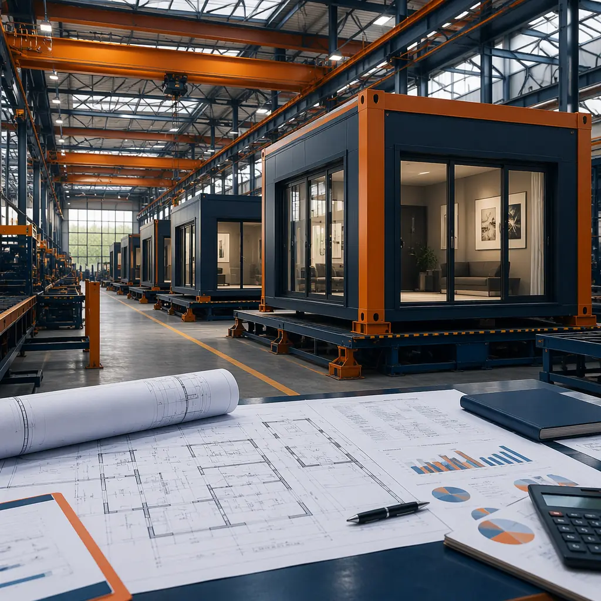
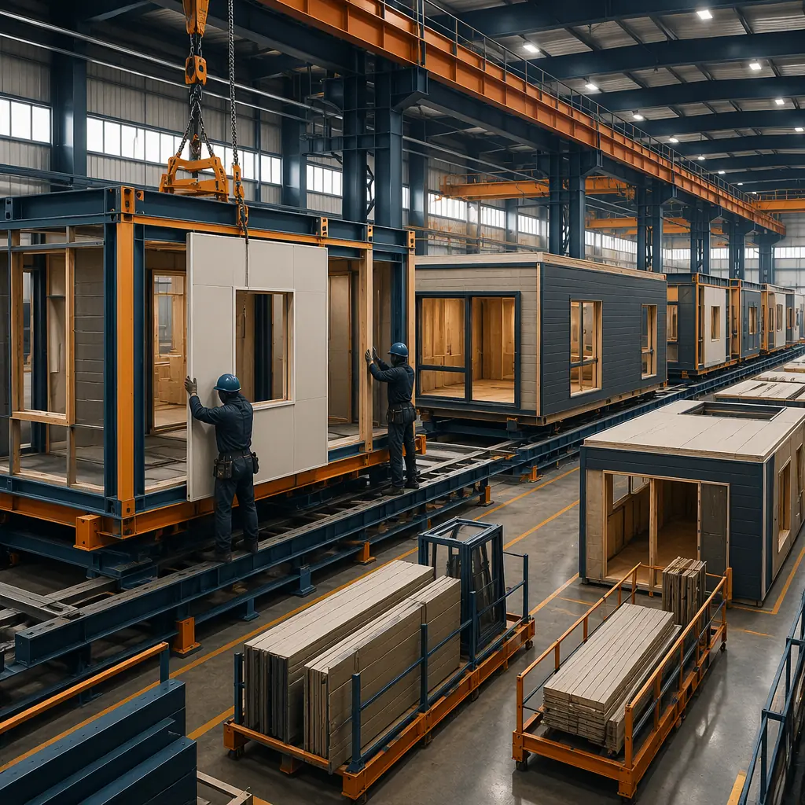
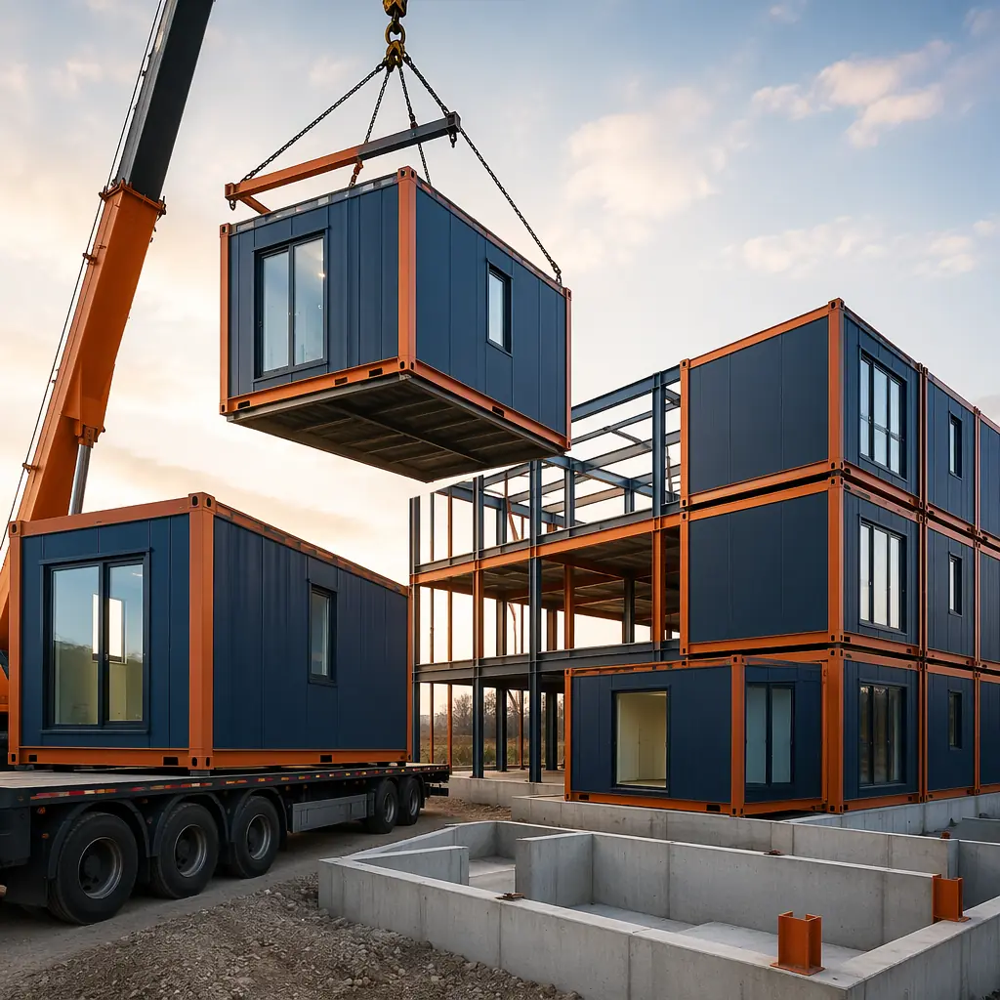
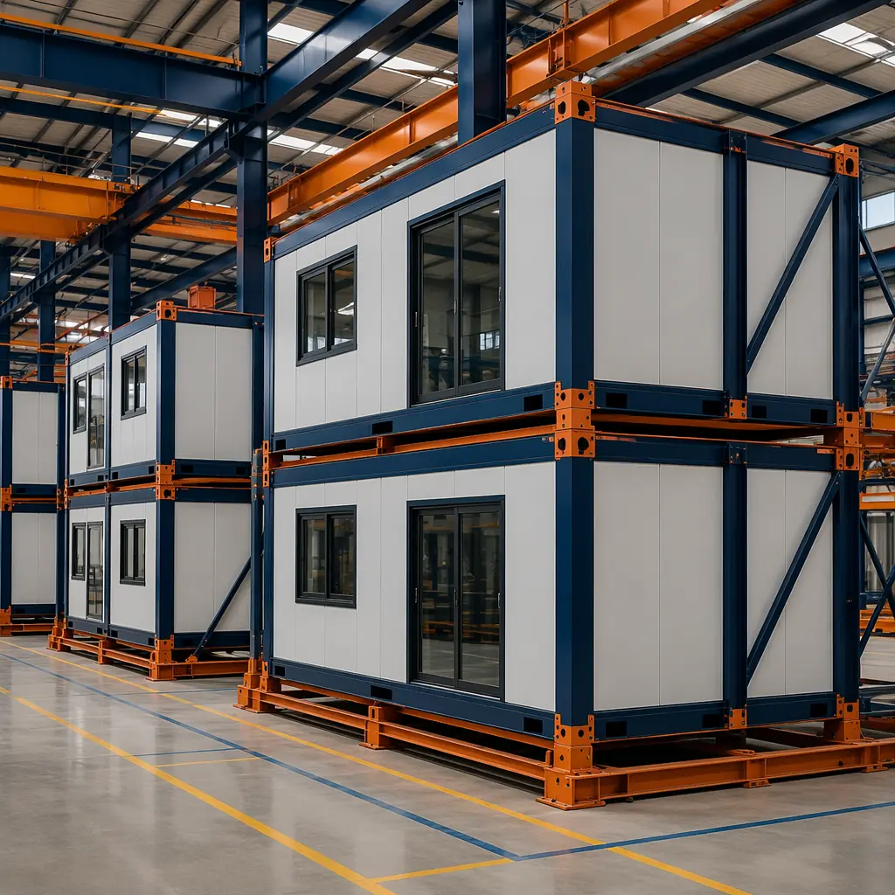
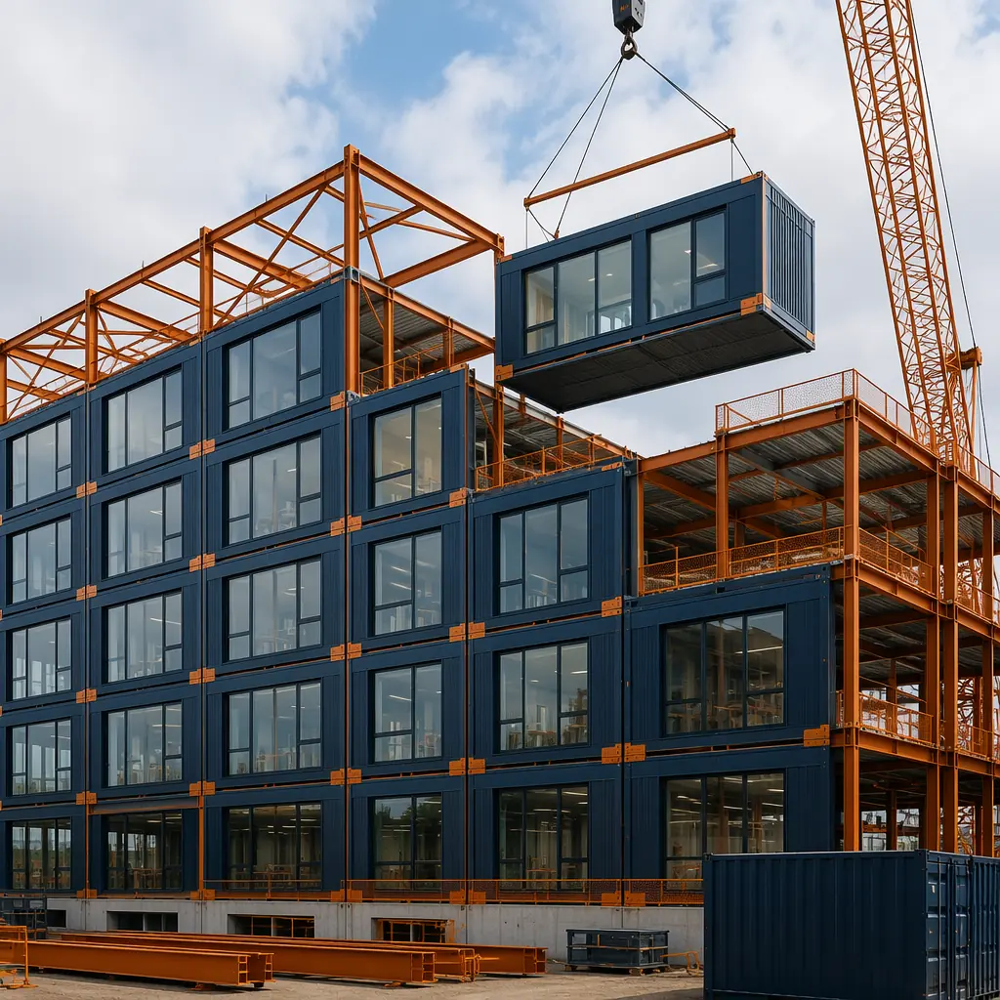
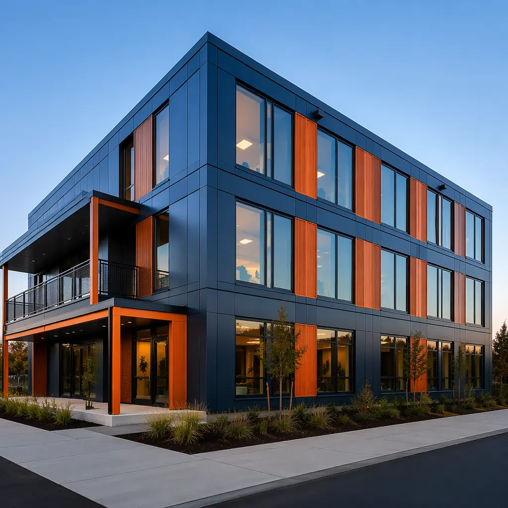

Financing is the single largest barrier developers cite when evaluating modular construction — not the technology, not the quality, not even the timeline. Lenders who have never underwritten a modular project default to caution, and their caution shows up as higher rates, shorter terms, or outright rejection. This guide explains exactly how modular construction financing works, what lenders need to see, and how developers who understand the numbers secure better terms than their conventionally-building competitors.

Why Modular Construction Financing Is Different — and Better
At first glance, modular financing looks harder. Lenders are unfamiliar with the draw schedule. The deposit requirements are front-loaded — 30–50% of the contract value paid before modules leave the factory. For a lender accustomed to spreading draws across 18–24 months of site progress, this upfront concentration looks like risk.
But the actual risk profile is the reverse. Here is what modular construction brings to the underwriting table that traditional construction cannot match:
- 92% budget accuracy. Across 500+ MODURA projects, 92% delivered within 5% of the original budget. Traditional construction averages 15–20% in change orders — a $3–4 million variance on a $20 million project. For a lender, that variance is the difference between a performing loan and a distressed one.
- Compressed risk window. A traditional construction loan is exposed to market risk for 18–24 months. A modular loan is exposed for 9–12 months. Half the time means half the probability of an interest rate spike, a labor shortage, or a market downturn during construction.
- Collateral visibility. In traditional construction, the lender disburses against a hole in the ground and a promise. In modular, 80% of the building's value exists as completed, inspected modules before they reach the site. A lender can walk the factory floor and see exactly what their money bought.
- Revenue acceleration. A hotel that opens 10 months earlier generates 10 months of additional revenue — improving the debt-service coverage ratio (DSCR) from the very first quarter of operation.

The question isn't whether modular construction is harder to finance. The question is whether your lender understands that a factory-built building with 92% budget certainty is a lower-risk asset than a site-built building with 15–20% cost overrun probability. The data is unambiguous — the challenge is lender education, not construction quality.
Construction Loan Types for Modular Projects
Modular construction projects can access the same loan products as traditional construction — but the terms you negotiate depend heavily on how you present the numbers. Here are the four primary structures and what makes each work for modular:
Standard Construction-to-Permanent Loans
The most common structure: an interest-only construction phase (9–12 months for modular, vs 18–24 for traditional), followed by conversion to a permanent mortgage. The critical advantage for modular is the compressed interest period. On a $20 million project at 7% construction financing, the interest savings alone range from $500,000 to $800,000 compared to a traditional build. This is the single strongest argument to bring to a lender — modular construction ROI starts before the building opens.
Modular-Specific Draw Schedules
Traditional construction draws are milestone-based: foundation complete, framing complete, drywall complete, and so on. Modular requires a different schedule — one that front-loads factory production draws. The typical modular draw schedule looks like this:
| Draw Phase | % of Loan | Timing |
|---|---|---|
| Site preparation & foundation | 10–15% | Month 1–2 |
| Factory production — deposit | 25–35% | Month 2 |
| Factory production — completion | 20–25% | Month 4–6 |
| Module delivery & installation | 15–20% | Month 7–8 |
| Site finishing & occupancy | 10–15% | Month 9–12 |
The key negotiation point: lenders may resist the front-loaded structure because it concentrates disbursement early. Counter with the reduced overall risk window and the 92% budget accuracy data. Most commercial lenders accept this draw schedule once they see the project controls that modular factories provide.
SBA 504 and 7(a) Loans (US Developers)
Small Business Administration loans cover modular construction projects under the same eligibility criteria as conventional construction. The SBA 504 program — which provides fixed-rate, long-term financing for owner-occupied commercial real estate — is particularly well-suited to modular office buildings and mixed-use developments where the developer occupies at least 51% of the space. Key benefits include 90% loan-to-cost ratios and 25-year fixed rates.
Green Building Financing Incentives
Modular construction inherently reduces waste by up to 70% and carbon emissions by approximately 30% compared to traditional methods — data points that unlock green financing incentives. Programs to investigate include Fannie Mae's Green Rewards (multifamily), C-PACE (Commercial Property Assessed Clean Energy) financing in 38 US states, and the EU's Sustainable Finance Disclosure Regulation (SFDR) aligned funds for European projects. These programs can reduce effective interest rates by 50–150 basis points for qualifying projects, especially when combined with LEED certification targets.

Insurance Considerations for Modular Construction
Insurance is the second piece of the financing puzzle — and one where modular construction has structural advantages that translate into premium savings.
Builder's Risk Insurance
Builder's risk covers property damage during construction. For modular projects, the policy must cover two locations: the factory (during production) and the site (during installation). The good news: factory production carries substantially lower risk than site construction. Climate-controlled environments eliminate weather damage. Controlled access reduces theft and vandalism — the two largest loss categories on construction sites. Data from MODURA's insurer partners shows that modular builder's risk claims are 40% lower in frequency and 60% lower in severity than traditional projects. Expect 15–25% premium reductions compared to a conventional build of the same value.
Transit and Installation Coverage
Modules in transit are the highest-risk phase of a modular project — but the exposure window is measured in days, not months. A 150-module project ships over 4–6 weeks. Transit coverage typically costs 0.3–0.5% of the module value. Installation floater coverage — protecting modules during the 8–12 week craning and connection phase — runs 0.2–0.4% of module value. Combined, transit and installation insurance on a $15 million project costs approximately $45,000–$75,000.
Performance Bonds and Surety
For public-sector and institutional projects — schools, government buildings, military housing — performance bonds are often mandatory. Modular contractors with strong balance sheets and factory assets are generally viewed favorably by surety underwriters: the factory represents tangible collateral that a site-only contractor cannot offer. MODURA's ISO 9001 and ISO 14001 certifications further reduce the perceived risk for surety providers, as documented in our company certifications.

Lender Concerns — and How to Address Them
Every developer presenting a modular project to a lender will encounter the same objections. Here is how to answer them with data, not optimism:
"We've never financed a modular project before."
This is the most common objection and the easiest to address. Point out that leading commercial banks — Wells Fargo, JP Morgan Chase, and Bank of America — all have dedicated modular construction lending desks as of 2025. If your local lender needs education, provide them with the Modular Building Institute's lender guide and offer to connect them with MODURA's finance team for a project briefing. The construction method is different, but the collateral — a completed, income-producing building — is exactly what they already lend against.
"The upfront deposit is too risky."
Acknowledge the concern and counter with factory visitability. Unlike a traditional contractor who might walk off the job, a modular factory with ISO-certified production lines, 500+ completed projects, and operations on three continents represents institutional-grade counterparty risk. If needed, offer a performance guarantee backed by the factory's balance sheet or a letter of credit from the developer's bank covering the deposit period. MODURA has used both structures for clients whose lenders required additional assurance.
"What if the factory goes bankrupt mid-project?"
This is the nuclear scenario lenders worry about. The protection: your contract should specify that module ownership transfers to the developer upon payment — meaning if production stops, you own the completed modules. Combined with a performance bond or parent-company guarantee, this risk is no greater than a traditional contractor defaulting. In 17 years and 500+ projects, MODURA has never failed to complete a contracted project — a track record that remote workforce housing clients in mining and oil & gas sectors have relied on in some of the world's most demanding environments.

The Financial Partner Checklist
Not all lenders are equipped to underwrite modular construction. When you are selecting a financial partner, evaluate them against these five criteria:
- Modular experience. Have they closed at least three modular construction loans? If not, expect a learning curve — and potentially more conservative terms while they learn.
- Draw schedule flexibility. Will they accommodate a front-loaded draw structure for factory production? If they insist on a traditional site-progress draw schedule, the financing will not work for modular.
- Green incentive integration. Do they participate in C-PACE, Green Rewards, or similar programs that can reduce your effective rate? Modular projects that target LEED certification frequently qualify for 50–150 bps in incentive reductions.
- Insurance partner network. Do they work with insurers who understand builder's risk for dual-location (factory + site) coverage? A lender who insists on a traditional single-site builder's risk policy is signaling inexperience with modular.
- Speed of underwriting. The whole point of modular construction is speed — a lender that takes 90 days to approve a loan undermines the timeline advantage. Target lenders who can commit within 30–45 days.
The difference between a 6.5% construction loan with a modular-experienced lender and an 8.0% loan with an unfamiliar one is approximately $225,000 in additional interest on a $15 million, 12-month project. The time you spend finding the right financial partner pays for itself many times over.
Building the Financial Case — What to Present
When you sit down with a lender, bring a package that answers their questions before they ask them:
- Factory tour invitation. There is no substitute for a lender walking the production floor and seeing completed modules. MODURA's factories are open to lender visits, and we recommend scheduling one before the underwriting process begins.
- Budget accuracy data. Include the 92% within-5% statistic and provide project references. Lenders who hear directly from developers who completed modular projects within budget become advocates.
- Revenue acceleration projection. Model the financial impact of opening 8–12 months earlier — whether it's hotel rooms generating ADR, apartment units collecting rent, or retail tenants paying leases. This is the most compelling number in the entire package.
- Exit strategy clarity. Modular buildings appraise identically to traditional buildings — there is no "modular discount" in the secondary market. Include comparable sales data for modular-built properties in the region to reinforce this point.
- Sustainability documentation. If your project targets LEED certification, include preliminary scorecards showing achievable credits. The 70% waste reduction inherent in modular factory production alone can contribute 2–4 LEED points under the Materials & Resources category.
